While it is not strictly necessary to use a legend in the graph ti describe the various data series potted it is usually a good idea. With the library there are three basic types of formatting you can do with the legend.
-
Adjusting basic parameters such as color and width of the edges (frame) around the plot box as well as adding/removing a drop shadow on the legend box.
-
Adjusting the position of the legend in the graph
-
Adjusting the number of columns that should be used for the internal layout in the legend box. As default the legend uses one column.
In Figure 14.15. Some example of ways to position the legend box in the graph we have shown some ides on how the legend can be positioned in the graph to give some ideas on the options available.
Figure 14.15. Some example of ways to position the legend box in the graph
| 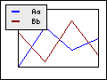 | 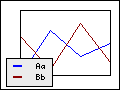 | 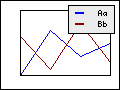 |
 | 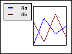 | 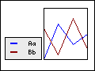 |
| 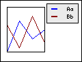 | 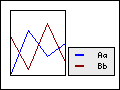 | 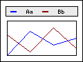 |
| 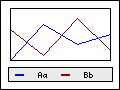 | 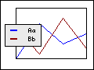 | 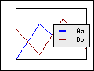 |
| 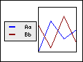 | 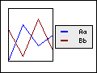 |
The way the legend is positioned is by calling one of the two methods
-
Legend::SetPos($aX,$aY,$aHAlign='right',$aVAlign='top') -
Legend::SetAbsPos($aX,$aY,$aHAlign='right',$aVAlign='top')
The first method specifies the position in fraction of the width and height and the second method specifies the position in absolute pixels where (0,0) is the top left corner. The anchor point for the legend box, i.e. the point in the legend box that should be aligned with the specified positoin, is given with the following two parameters. The line below gives an example of specifying the legend position
1 | $graph->legend->SetPos(0.5,0.98,'center','bottom'); |
The line above will position the legend centered horizontally and the bottom of the legend just above the the bottom edge of the graph.
Tip
The legend box can also have a drop shadow. By specifying the color to be
alpha-blended it is possible create a very nice drop shadow affect onto the
graph. See Figure 14.2. Using alternating fill colors in the grid ( or Figure 14.16. Some example of different legend layouts for some examples on how this
looks.filledgridex1.php)
Tip
By default the ordering of the texts in te legend will be the same as the
order the plots are added to the graph. It is also possible to reverse this
order in the legend with a call to the method
Legend::Revers()
The layout of the legend box can also be adjusted by specifying how many columns the legends should use. By default one column is used which means that all legend texts will be on top of each other. The number of columns to be used in the legend is specified with a call to the method
-
Legend::SetColumns($aNbr)
Figure 14.16. Some example of different legend layouts shows four examples how setting different values for the number of columns will change the layout of the legend.
As two special cases the one column layout (a.k.a. vertical layout) which is the default, and the "unlimited number of columns" a.k.a. horizontal layout can also be specified with the method
-
Legend::SetLayout($aLayout)$aLayoutis eitherLEGEND_VERTorLEGEND_HOR
Caution
Either SetLayout() or SetColumns() should be
used but not both since the method last called will be the one that is
used.
Tip
The vertical margin between two legend texts can be adjusted with a call to the method
-
Legend::SetVColMargin($aSpacing)
by default the margin is quite small. Note. Since the bounding box for TTF fonts and bitmapped texts are slightly different the distance between legend texts when using a bitmap font (the default) will be visually larger than for TTF fonts. The default value is optimized for TTF fonts.